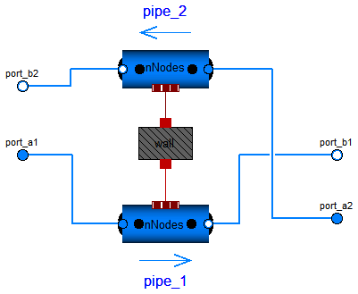

Modelica.Fluid.Examples.HeatExchanger.BaseClasses.WallConstProps
Modelica.Fluid.Examples.HeatExchanger.BaseClasses.WallConstProps
| Name | Description |
|---|---|
| BasicHX | Simple heat exchanger model |
| WallConstProps | Pipe wall with capacitance, assuming 1D heat conduction and constant material properties |

Simple model of a heat exchanger consisting of two pipes and one wall in between. For both fluids geometry parameters, such as heat transfer area and cross section as well as heat transfer and pressure drop correlations may be chosen. The flow scheme may be concurrent or counterflow, defined by the respective flow directions of the fluids entering the component. The design flow direction with positive m_flow variables is counterflow.
| Type | Name | Default | Description |
|---|---|---|---|
| Integer | nNodes | 2 | Spatial segmentation |
| Length | length | Length of flow path for both fluids [m] | |
| Length | s_wall | Wall thickness [m] | |
| Boolean | use_HeatTransfer | false | = true to use the HeatTransfer_1/_2 model |
| Fluid 1 | |||
| Area | crossArea_1 | Cross sectional area [m2] | |
| Length | perimeter_1 | Flow channel perimeter [m] | |
| Area | area_h_1 | Heat transfer area [m2] | |
| Length | roughness_1 | 2.5e-5 | Absolute roughness of pipe (default = smooth steel pipe) [m] |
| Fluid 2 | |||
| Area | crossArea_2 | Cross sectional area [m2] | |
| Length | perimeter_2 | Flow channel perimeter [m] | |
| Area | area_h_2 | Heat transfer area [m2] | |
| Length | roughness_2 | 2.5e-5 | Absolute roughness of pipe (default = smooth steel pipe) [m] |
| Solid material properties | |||
| Density | rho_wall | Density of wall material [kg/m3] | |
| SpecificHeatCapacity | c_wall | Specific heat capacity of wall material [J/(kg.K)] | |
| ThermalConductivity | k_wall | Thermal conductivity of wall material [W/(m.K)] | |
| Assumptions | |||
| Boolean | allowFlowReversal | system.allowFlowReversal | allow flow reversal, false restricts to design direction (port_a -> port_b) |
| Dynamics | |||
| Dynamics | energyDynamics | system.energyDynamics | Formulation of energy balance |
| Dynamics | massDynamics | system.massDynamics | Formulation of mass balance |
| Dynamics | momentumDynamics | system.momentumDynamics | Formulation of momentum balance, if pressureLoss options available |
| Initialization | |||
| Wall | |||
| Temperature | Twall_start | Start value of wall temperature [K] | |
| Temperature | dT | Start value for pipe_1.T - pipe_2.T [K] | |
| Boolean | use_T_start | true | Use T_start if true, otherwise h_start |
| Fluid 1 | |||
| AbsolutePressure | p_a_start1 | Medium_1.p_default | Start value of pressure [Pa] |
| AbsolutePressure | p_b_start1 | Medium_1.p_default | Start value of pressure [Pa] |
| Temperature | T_start_1 | if use_T_start then Medium_1... | Start value of temperature [K] |
| SpecificEnthalpy | h_start_1 | if use_T_start then Medium_1... | Start value of specific enthalpy [J/kg] |
| MassFraction | X_start_1[Medium_1.nX] | Medium_1.X_default | Start value of mass fractions m_i/m [kg/kg] |
| MassFlowRate | m_flow_start_1 | system.m_flow_start | Start value of mass flow rate [kg/s] |
| Fluid 2 | |||
| AbsolutePressure | p_a_start2 | Medium_2.p_default | Start value of pressure [Pa] |
| AbsolutePressure | p_b_start2 | Medium_2.p_default | Start value of pressure [Pa] |
| Temperature | T_start_2 | if use_T_start then Medium_2... | Start value of temperature [K] |
| SpecificEnthalpy | h_start_2 | if use_T_start then Medium_2... | Start value of specific enthalpy [J/kg] |
| MassFraction | X_start_2[Medium_2.nX] | Medium_2.X_default | Start value of mass fractions m_i/m [kg/kg] |
| MassFlowRate | m_flow_start_2 | system.m_flow_start | Start value of mass flow rate [kg/s] |
| Type | Name | Description |
|---|---|---|
| FluidPort_b | port_b1 | |
| FluidPort_a | port_a1 | |
| FluidPort_b | port_b2 | |
| FluidPort_a | port_a2 |
model BasicHX "Simple heat exchanger model"
outer Modelica.Fluid.System system "System properties";
//General
parameter Integer nNodes(min=1) = 2 "Spatial segmentation";
replaceable package Medium_1 = Modelica.Media.Water.StandardWater constrainedby
Modelica.Media.Interfaces.PartialMedium "Fluid 1";
replaceable package Medium_2 = Modelica.Media.Water.StandardWater constrainedby
Modelica.Media.Interfaces.PartialMedium "Fluid 2";
parameter SI.Area crossArea_1 "Cross sectional area";
parameter SI.Area crossArea_2 "Cross sectional area";
parameter SI.Length perimeter_1 "Flow channel perimeter";
parameter SI.Length perimeter_2 "Flow channel perimeter";
parameter SI.Length length(min=0) "Length of flow path for both fluids";
parameter SI.Length s_wall(min=0) "Wall thickness";
parameter Boolean use_HeatTransfer = false
"= true to use the HeatTransfer_1/_2 model";
// Heat transfer
replaceable model HeatTransfer_1 =
Modelica.Fluid.Pipes.BaseClasses.HeatTransfer.IdealFlowHeatTransfer
constrainedby
Modelica.Fluid.Pipes.BaseClasses.HeatTransfer.PartialFlowHeatTransfer
"Heat transfer model";
replaceable model HeatTransfer_2 =
Modelica.Fluid.Pipes.BaseClasses.HeatTransfer.IdealFlowHeatTransfer
constrainedby
Modelica.Fluid.Pipes.BaseClasses.HeatTransfer.PartialFlowHeatTransfer
"Heat transfer model";
parameter SI.Area area_h_1 "Heat transfer area";
parameter SI.Area area_h_2 "Heat transfer area";
//Wall
parameter SI.Density rho_wall "Density of wall material";
parameter SI.SpecificHeatCapacity c_wall
"Specific heat capacity of wall material";
final parameter SI.Area area_h=(area_h_1 + area_h_2)/2 "Heat transfer area";
final parameter SI.Mass m_wall=rho_wall*area_h*s_wall "Wall mass";
parameter SI.ThermalConductivity k_wall
"Thermal conductivity of wall material";
// Assumptions
parameter Boolean allowFlowReversal = system.allowFlowReversal
"allow flow reversal, false restricts to design direction (port_a -> port_b)";
parameter Types.Dynamics energyDynamics=system.energyDynamics
"Formulation of energy balance";
parameter Types.Dynamics massDynamics=system.massDynamics
"Formulation of mass balance";
parameter Types.Dynamics momentumDynamics=system.momentumDynamics
"Formulation of momentum balance, if pressureLoss options available";
//Initialization pipe 1
parameter SI.Temperature Twall_start "Start value of wall temperature";
parameter SI.Temperature dT "Start value for pipe_1.T - pipe_2.T";
parameter Boolean use_T_start=true "Use T_start if true, otherwise h_start";
parameter Medium_1.AbsolutePressure p_a_start1=Medium_1.p_default
"Start value of pressure";
parameter Medium_1.AbsolutePressure p_b_start1=Medium_1.p_default
"Start value of pressure";
parameter Medium_1.Temperature T_start_1=if use_T_start then Medium_1.
T_default else Medium_1.temperature_phX(
(p_a_start1 + p_b_start1)/2,
h_start_1,
X_start_1) "Start value of temperature";
parameter Medium_1.SpecificEnthalpy h_start_1=if use_T_start then Medium_1.specificEnthalpy_pTX(
(p_a_start1 + p_b_start1)/2,
T_start_1,
X_start_1[1:Medium_1.nXi]) else Medium_1.h_default
"Start value of specific enthalpy";
parameter Medium_1.MassFraction X_start_1[Medium_1.nX]=Medium_1.X_default
"Start value of mass fractions m_i/m";
parameter Medium_1.MassFlowRate m_flow_start_1 = system.m_flow_start
"Start value of mass flow rate";
//Initialization pipe 2
parameter Medium_2.AbsolutePressure p_a_start2=Medium_2.p_default
"Start value of pressure";
parameter Medium_2.AbsolutePressure p_b_start2=Medium_2.p_default
"Start value of pressure";
parameter Medium_2.Temperature T_start_2=if use_T_start then Medium_2.
T_default else Medium_2.temperature_phX(
(p_a_start2 + p_b_start2)/2,
h_start_2,
X_start_2) "Start value of temperature";
parameter Medium_2.SpecificEnthalpy h_start_2=if use_T_start then Medium_2.specificEnthalpy_pTX(
(p_a_start2 + p_b_start2)/2,
T_start_2,
X_start_2[1:Medium_2.nXi]) else Medium_2.h_default
"Start value of specific enthalpy";
parameter Medium_2.MassFraction X_start_2[Medium_2.nX]=Medium_2.X_default
"Start value of mass fractions m_i/m";
parameter Medium_2.MassFlowRate m_flow_start_2 = system.m_flow_start
"Start value of mass flow rate";
//Pressure drop and heat transfer
replaceable model FlowModel_1 =
Modelica.Fluid.Pipes.BaseClasses.FlowModels.DetailedPipeFlow
constrainedby
Modelica.Fluid.Pipes.BaseClasses.FlowModels.PartialStaggeredFlowModel
"Characteristic of wall friction";
replaceable model FlowModel_2 =
Modelica.Fluid.Pipes.BaseClasses.FlowModels.DetailedPipeFlow
constrainedby
Modelica.Fluid.Pipes.BaseClasses.FlowModels.PartialStaggeredFlowModel
"Characteristic of wall friction";
parameter SI.Length roughness_1=2.5e-5
"Absolute roughness of pipe (default = smooth steel pipe)";
parameter SI.Length roughness_2=2.5e-5
"Absolute roughness of pipe (default = smooth steel pipe)";
//Display variables
SI.HeatFlowRate Q_flow_1 "Total heat flow rate of pipe 1";
SI.HeatFlowRate Q_flow_2 "Total heat flow rate of pipe 2";
BaseClasses.WallConstProps wall(
rho_wall=rho_wall,
c_wall=c_wall,
T_start=Twall_start,
k_wall=k_wall,
dT=dT,
s=s_wall,
energyDynamics=energyDynamics,
n=nNodes,
area_h=(crossArea_1 + crossArea_2)/2);
Modelica.Fluid.Pipes.DynamicPipe pipe_1(
redeclare final package Medium = Medium_1,
final isCircular=false,
final diameter=0,
final nNodes=nNodes,
final allowFlowReversal=allowFlowReversal,
final energyDynamics=energyDynamics,
final massDynamics=massDynamics,
final momentumDynamics=momentumDynamics,
final length=length,
final use_HeatTransfer=use_HeatTransfer,
redeclare final model HeatTransfer = HeatTransfer_1,
final use_T_start=use_T_start,
final T_start=T_start_1,
final h_start=h_start_1,
final X_start=X_start_1,
final m_flow_start=m_flow_start_1,
final perimeter=perimeter_1,
final crossArea=crossArea_1,
final roughness=roughness_1,
redeclare final model FlowModel = FlowModel_1);
Modelica.Fluid.Pipes.DynamicPipe pipe_2(
redeclare final package Medium = Medium_2,
final nNodes=nNodes,
final allowFlowReversal=allowFlowReversal,
final energyDynamics=energyDynamics,
final massDynamics=massDynamics,
final momentumDynamics=momentumDynamics,
final length=length,
final isCircular=false,
final diameter=0,
final use_HeatTransfer=use_HeatTransfer,
redeclare final model HeatTransfer = HeatTransfer_2,
final use_T_start=use_T_start,
final T_start=T_start_2,
final h_start=h_start_2,
final X_start=X_start_2,
final m_flow_start=m_flow_start_2,
final perimeter=perimeter_2,
final crossArea=crossArea_2,
final p_a_start=p_a_start1,
final p_b_start=p_b_start2,
final roughness=roughness_2,
redeclare final model FlowModel = FlowModel_2);
Modelica.Fluid.Interfaces.FluidPort_b port_b1(redeclare final package Medium
= Medium_1);
Modelica.Fluid.Interfaces.FluidPort_a port_a1(redeclare final package Medium
= Medium_1);
Modelica.Fluid.Interfaces.FluidPort_b port_b2(redeclare final package Medium
= Medium_2);
Modelica.Fluid.Interfaces.FluidPort_a port_a2(redeclare final package Medium
= Medium_2);
equation
Q_flow_1 = sum(pipe_1.heatTransfer.Q_flows);
Q_flow_2 = sum(pipe_2.heatTransfer.Q_flows);
connect(pipe_2.port_b, port_b2);
connect(pipe_1.port_b, port_b1);
connect(pipe_1.port_a, port_a1);
connect(pipe_2.port_a, port_a2);
connect(wall.heatPort_b, pipe_1.heatPorts);
connect(pipe_2.heatPorts[nNodes:-1:1], wall.heatPort_a[1:nNodes]);
end BasicHX;
Modelica.Fluid.Examples.HeatExchanger.BaseClasses.WallConstProps
n) is meant to correspond to a connected fluid model discretization.
| Type | Name | Default | Description |
|---|---|---|---|
| Integer | n | 1 | Segmentation perpendicular to heat conduction |
| Length | s | Wall thickness [m] | |
| Area | area_h | Heat transfer area [m2] | |
| Density | rho_wall | Density of wall material [kg/m3] | |
| SpecificHeatCapacity | c_wall | Specific heat capacity of wall material [J/(kg.K)] | |
| ThermalConductivity | k_wall | Thermal conductivity of wall material [W/(m.K)] | |
| Mass | m[n] | fill(rho_wall*area_h*s/n, n) | Distribution of wall mass [kg] |
| Temperature | T_start | Wall temperature start value [K] | |
| Temperature | dT | Start value for port_b.T - port_a.T [K] | |
| Assumptions | |||
| Dynamics | |||
| Dynamics | energyDynamics | system.energyDynamics | Formulation of energy balance |
| Type | Name | Description |
|---|---|---|
| HeatPort_a | heatPort_a[n] | Thermal port |
| HeatPort_a | heatPort_b[n] | Thermal port |
model WallConstProps
"Pipe wall with capacitance, assuming 1D heat conduction and constant material properties"
parameter Integer n(min=1)=1 "Segmentation perpendicular to heat conduction";
//Geometry
parameter SI.Length s "Wall thickness";
parameter SI.Area area_h "Heat transfer area";
//Material properties
parameter SI.Density rho_wall "Density of wall material";
parameter SI.SpecificHeatCapacity c_wall
"Specific heat capacity of wall material";
parameter SI.ThermalConductivity k_wall
"Thermal conductivity of wall material";
parameter SI.Mass[n] m=fill(rho_wall*area_h*s/n,n)
"Distribution of wall mass";
//Initialization
outer Modelica.Fluid.System system;
parameter Types.Dynamics energyDynamics=system.energyDynamics
"Formulation of energy balance";
parameter SI.Temperature T_start "Wall temperature start value";
parameter SI.Temperature dT "Start value for port_b.T - port_a.T";
//Temperatures
SI.Temperature[n] Tb(each start=T_start+0.5*dT);
SI.Temperature[n] Ta(each start=T_start-0.5*dT);
SI.Temperature[n] T(start=ones(n)*T_start, stateSelect=StateSelect.prefer)
"Wall temperature";
Modelica.Thermal.HeatTransfer.Interfaces.HeatPort_a[n] heatPort_a
"Thermal port";
Modelica.Thermal.HeatTransfer.Interfaces.HeatPort_a[n] heatPort_b
"Thermal port";
initial equation
if energyDynamics == Types.Dynamics.SteadyState then
der(T) = zeros(n);
elseif energyDynamics == Types.Dynamics.FixedInitial then
T = ones(n)*T_start;
end if;
equation
for i in 1:n loop
assert(m[i]>0, "Wall has negative dimensions");
if energyDynamics == Types.Dynamics.SteadyState then
0 = heatPort_a[i].Q_flow + heatPort_b[i].Q_flow;
else
c_wall*m[i]*der(T[i]) = heatPort_a[i].Q_flow + heatPort_b[i].Q_flow;
end if;
heatPort_a[i].Q_flow=k_wall/s*(Ta[i]-T[i])*area_h/n;
heatPort_b[i].Q_flow=k_wall/s*(Tb[i]-T[i])*area_h/n;
end for;
Ta=heatPort_a.T;
Tb=heatPort_b.T;
end WallConstProps;
 Modelica.Fluid.Examples.HeatExchanger.BaseClasses.BasicHX.HeatTransfer_1
Modelica.Fluid.Examples.HeatExchanger.BaseClasses.BasicHX.HeatTransfer_1

| Type | Name | Default | Description |
|---|---|---|---|
| Ambient | |||
| CoefficientOfHeatTransfer | k | 0 | Heat transfer coefficient to ambient [W/(m2.K)] |
| Temperature | T_ambient | system.T_ambient | Ambient temperature [K] |
| Internal Interface | |||
| replaceable package Medium | PartialMedium | Medium in the component | |
| Integer | n | 1 | Number of heat transfer segments |
| Boolean | use_k | false | = true to use k value for thermal isolation |
| Geometry | |||
| Real | nParallel | number of identical parallel flow devices | |
| Type | Name | Description |
|---|---|---|
| HeatPorts_a | heatPorts[n] | Heat port to component boundary |
replaceable model HeatTransfer_1 =
Modelica.Fluid.Pipes.BaseClasses.HeatTransfer.IdealFlowHeatTransfer
constrainedby
Modelica.Fluid.Pipes.BaseClasses.HeatTransfer.PartialFlowHeatTransfer
"Heat transfer model";
 Modelica.Fluid.Examples.HeatExchanger.BaseClasses.BasicHX.FlowModel_1
Modelica.Fluid.Examples.HeatExchanger.BaseClasses.BasicHX.FlowModel_1

| Type | Name | Default | Description |
|---|---|---|---|
| AbsolutePressure | dp_nominal | 1e3*dp_small | Nominal pressure loss (for nominal models) [Pa] |
| MassFlowRate | m_flow_nominal | 1e2*m_flow_small | Mass flow rate for dp_nominal (for nominal models) [kg/s] |
| Boolean | from_dp | momentumDynamics >= Types.Dy... | = true, use m_flow = f(dp), otherwise dp = f(m_flow) |
| AbsolutePressure | dp_small | system.dp_small | Within regularization if |dp| < dp_small (may be wider for large discontinuities in static head) [Pa] |
| MassFlowRate | m_flow_small | system.m_flow_small | Within regularization if |m_flows| < m_flow_small (may be wider for large discontinuities in static head) [kg/s] |
| Advanced | |||
| Boolean | useUpstreamScheme | true | = false to average upstream and downstream properties across flow segments |
| Boolean | use_Ib_flows | momentumDynamics <> Types.Dy... | = true to consider differences in flow of momentum through boundaries |
| Diagnostics | |||
| Boolean | show_Res | false | = true, if Reynolds numbers are included for plotting |
| Internal Interface | |||
| replaceable package Medium | PartialMedium | Medium in the component | |
| Integer | n | 2 | Number of discrete flow volumes |
| Geometry | |||
| Real | nParallel | number of identical parallel flow devices | |
| Static head | |||
| Acceleration | g | system.g | Constant gravity acceleration [m/s2] |
| Assumptions | |||
| Boolean | allowFlowReversal | system.allowFlowReversal | = true to allow flow reversal, false restricts to design direction (states[1] -> states[n+1]) |
| Dynamics | momentumDynamics | system.momentumDynamics | Formulation of momentum balance |
| Initialization | |||
| MassFlowRate | m_flow_start | system.m_flow_start | Start value of mass flow rates [kg/s] |
| AbsolutePressure | p_a_start | Start value for p[1] at design inflow [Pa] | |
| AbsolutePressure | p_b_start | Start value for p[n+1] at design outflow [Pa] | |
replaceable model FlowModel_1 =
Modelica.Fluid.Pipes.BaseClasses.FlowModels.DetailedPipeFlow
constrainedby
Modelica.Fluid.Pipes.BaseClasses.FlowModels.PartialStaggeredFlowModel
"Characteristic of wall friction";
 Modelica.Fluid.Examples.HeatExchanger.BaseClasses.BasicHX.HeatTransfer_2
Modelica.Fluid.Examples.HeatExchanger.BaseClasses.BasicHX.HeatTransfer_2

| Type | Name | Default | Description |
|---|---|---|---|
| Ambient | |||
| CoefficientOfHeatTransfer | k | 0 | Heat transfer coefficient to ambient [W/(m2.K)] |
| Temperature | T_ambient | system.T_ambient | Ambient temperature [K] |
| Internal Interface | |||
| replaceable package Medium | PartialMedium | Medium in the component | |
| Integer | n | 1 | Number of heat transfer segments |
| Boolean | use_k | false | = true to use k value for thermal isolation |
| Geometry | |||
| Real | nParallel | number of identical parallel flow devices | |
| Type | Name | Description |
|---|---|---|
| HeatPorts_a | heatPorts[n] | Heat port to component boundary |
replaceable model HeatTransfer_2 =
Modelica.Fluid.Pipes.BaseClasses.HeatTransfer.IdealFlowHeatTransfer
constrainedby
Modelica.Fluid.Pipes.BaseClasses.HeatTransfer.PartialFlowHeatTransfer
"Heat transfer model";
 Modelica.Fluid.Examples.HeatExchanger.BaseClasses.BasicHX.FlowModel_2
Modelica.Fluid.Examples.HeatExchanger.BaseClasses.BasicHX.FlowModel_2

| Type | Name | Default | Description |
|---|---|---|---|
| AbsolutePressure | dp_nominal | 1e3*dp_small | Nominal pressure loss (for nominal models) [Pa] |
| MassFlowRate | m_flow_nominal | 1e2*m_flow_small | Mass flow rate for dp_nominal (for nominal models) [kg/s] |
| Boolean | from_dp | momentumDynamics >= Types.Dy... | = true, use m_flow = f(dp), otherwise dp = f(m_flow) |
| AbsolutePressure | dp_small | system.dp_small | Within regularization if |dp| < dp_small (may be wider for large discontinuities in static head) [Pa] |
| MassFlowRate | m_flow_small | system.m_flow_small | Within regularization if |m_flows| < m_flow_small (may be wider for large discontinuities in static head) [kg/s] |
| Advanced | |||
| Boolean | useUpstreamScheme | true | = false to average upstream and downstream properties across flow segments |
| Boolean | use_Ib_flows | momentumDynamics <> Types.Dy... | = true to consider differences in flow of momentum through boundaries |
| Diagnostics | |||
| Boolean | show_Res | false | = true, if Reynolds numbers are included for plotting |
| Internal Interface | |||
| replaceable package Medium | PartialMedium | Medium in the component | |
| Integer | n | 2 | Number of discrete flow volumes |
| Geometry | |||
| Real | nParallel | number of identical parallel flow devices | |
| Static head | |||
| Acceleration | g | system.g | Constant gravity acceleration [m/s2] |
| Assumptions | |||
| Boolean | allowFlowReversal | system.allowFlowReversal | = true to allow flow reversal, false restricts to design direction (states[1] -> states[n+1]) |
| Dynamics | momentumDynamics | system.momentumDynamics | Formulation of momentum balance |
| Initialization | |||
| MassFlowRate | m_flow_start | system.m_flow_start | Start value of mass flow rates [kg/s] |
| AbsolutePressure | p_a_start | Start value for p[1] at design inflow [Pa] | |
| AbsolutePressure | p_b_start | Start value for p[n+1] at design outflow [Pa] | |
replaceable model FlowModel_2 =
Modelica.Fluid.Pipes.BaseClasses.FlowModels.DetailedPipeFlow
constrainedby
Modelica.Fluid.Pipes.BaseClasses.FlowModels.PartialStaggeredFlowModel
"Characteristic of wall friction";